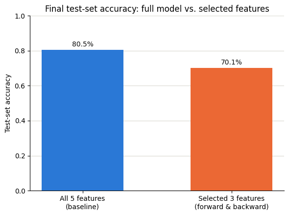
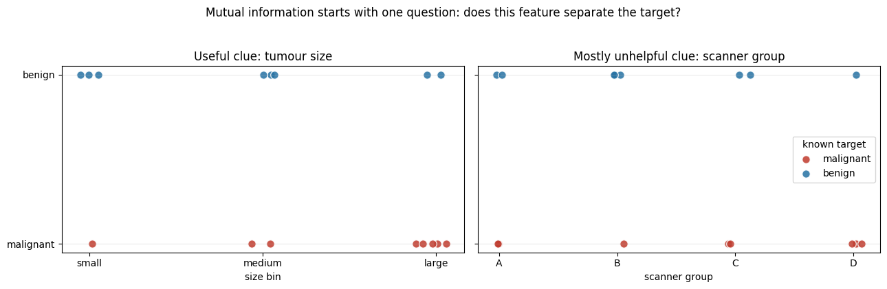
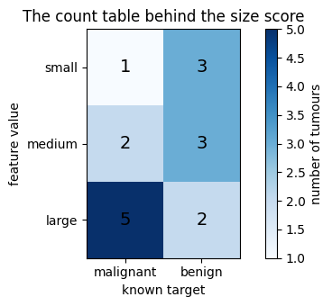

Arun had 60 columns and believed every one helped. More information, better model — surely.
Test accuracy got worse as he added columns. The model was finding patterns in pure noise and trusting them.
With enough useless columns, something will look meaningful by pure chance. A constant column carries nothing; a duplicated column splits the credit and confuses both halves.
Feature selection removes them: a variance threshold for dead columns, a correlation check for columns that repeat each other, mutual information to score each column against the answer, and forward and backward selection to test whether a column actually earns its place.
🔑 The one idea
Keep the columns that carry signal; drop the ones carrying noise, duplication, or nothing.
Every dataset has columns. Some columns help a model make good
predictions. Some columns barely help. Some columns can even confuse
the model.
Feature selection means picking the best columns to keep, and
dropping the rest. It always looks the same shape: you start with N
candidate columns, and you end with fewer columns. The dropping is
the selection — nothing more has to happen for it to count.
This note ties together everything from two notebooks:
There isn't one "feature selection technique." There are two very
different families, and they answer different questions.
Filter method (VarianceThreshold)
Wrapper method (Forward / Backward Selection)
Needs a target column (y)?
No
Yes
Trains a model?
No
Yes — many times, once per candidate
Speed
Very fast — just column statistics
Slow — cost grows with feature count
Best used on
Wide data, hundreds of columns
Narrower data, already trimmed down
The question it asks
"Does this column even change?"
"Does this column help the model score better?"
Risk
Might keep a column that varies but is still useless for prediction
Might overfit its pick to one particular train/test split
A filter method never looks at the answer you're trying to predict. A
wrapper method is built entirely around that answer — it trains a
model, checks the score, and repeats.
How each technique works
Forward Selection
Starts with zero features and adds one at a time.
Try each feature alone. Train + cross-validate. Keep whichever
single feature scores best.
Try adding each remaining feature to that winner. Keep whichever
pair scores best.
Keep repeating — one more feature each round — until you reach the
target count.
Backward Elimination
The mirror image. Starts with all features and removes one at a
time.
Train + cross-validate on the full feature set.
Try removing each feature, one at a time. Remove whichever one
hurts the score the least (or helps the most).
Keep repeating — one fewer feature each round — down to the target
count.
Both of these are greedy searches: once a feature is picked (or
dropped), that choice is locked in and never revisited. Neither
guarantees the single best possible combination, but both are far
cheaper than testing every possible combination.
Both also rely on cross-validation to score each candidate — the
training data gets cut into 5 chunks (cv=5), the model trains on 4 and
checks itself on the held-out 5th, five times over, and the 5 scores
get averaged. That's more trustworthy than judging a candidate on one
single split.
VarianceThreshold
Looks at one column at a time, and calculates its variance — a
number that measures how spread out the values are. Take the mean,
find how far each value sits from it, square that distance, average
the squares.
A column where every row has the same value has variance 0 — it
can never help tell rows apart, no matter what you're predicting.
VarianceThreshold(threshold=0.0) drops any column at or below that
cutoff. Raise the threshold to also drop near-constant columns, not
just perfectly constant ones.
No model gets trained. No target column gets touched. It's a pure,
cheap check on X by itself.
The real pipeline: use both, in order
These two families aren't rivals — they're stages of the same
pipeline. Filter first, because it's cheap and scales to hundreds of
columns. Wrapper second, because it's smart but expensive, so it
should only have to search among whatever survives the filter.
flow diagram (rendered in the notebook)
flowchart LR
A[Raw data<br/>many columns] --> B[Filter method<br/>VarianceThreshold]
B --> C[Fewer columns<br/>obvious junk gone]
C --> D[Wrapper method<br/>Forward / Backward Selection]
D --> E[Final feature set]
style A fill:#8a8f98,color:#fff
style B fill:#2a78d6,color:#fff
style D fill:#2a78d6,color:#fff
style E fill:#2f9e6f,color:#fff
Running Forward/Backward Selection directly on hundreds of raw columns
would be painfully slow — it trains a model per candidate per fold, at
every step. Filtering first cuts that candidate pool down before the
expensive search even starts.
A simple analogy
Think of hiring for a job with 300 applicants.
Filter method = resume screening. Quick, automatic, no
interviews. Anyone missing the basic requirement (no degree listed,
application left blank) gets cut immediately. Cheap, but it can't
tell you who's actually the best candidate — only who's obviously
unqualified.
Wrapper method = the actual interview rounds. Expensive — every
candidate takes real time — but it directly tests who performs best
at the job. You wouldn't interview all 300 people; you'd screen first,
then interview whoever's left.
FAQ
Does feature selection guarantee better accuracy on new data?
No. In 20_Feature_Selection_techniques.ipynb, the 3-feature model
that Forward/Backward Selection picked actually scored lower on the
held-out test set (70.1%) than keeping all 5 features (80.5%) — even
though it had the better cross-validated score during selection
(75.25% vs 72.49%). A single test split is small and can be noisy.
Cross-validation is what these methods actually optimize, not any one
test score.
Can I use more than one filter method together?
Yes. VarianceThreshold only checks "does this column vary?" — other
filter methods check different things, like correlation with the
target. They can be chained.
Which family should I start with on a brand new dataset?
Filter first, if the dataset is wide. It's nearly free to run and
removes the obviously useless columns before you spend any real
compute.
Do these methods only work for classification?
No. Swap the model and the scoring parameter (e.g. r2 instead of
accuracy) and the same Forward/Backward Selection loop works for
regression too. VarianceThreshold doesn't care about the task at
all — it never looks at y.
Interview-style Q&A
Q: What's the difference between a filter method and a wrapper method?
A: A filter method scores each feature using only the feature's own
statistics — it never touches the model or the target. A wrapper
method scores feature subsets by actually training a model on each one
and checking its performance. Filters are fast and target-agnostic;
wrappers are slow but tuned to a specific model and target.
Q: Why is Forward/Backward Selection expensive for datasets with many features?
A: At each step, it has to train and cross-validate one model per
remaining candidate feature. The number of models trained grows with
both the feature count and the number of CV folds — for 5 features and
cv=5, that's already around 75 model trainings just to build the
full path from 1 to 5 features.
Q: If VarianceThreshold doesn't use the target column, how can it be called "feature selection"?
A: Feature selection just means reducing a candidate set of columns
down to a smaller kept set — it doesn't require a target to qualify.
VarianceThreshold selects based on a data-quality rule (does the
column vary?) instead of a predictive-power rule. It's a different
criterion for selection, not a non-selection.
Every dataset has columns. Some columns help a model make good predictions.
Some columns barely help. Some columns can even confuse the model.
Feature selection means picking the best columns to keep, and dropping
the rest.
Why bother?
Fewer columns can mean a simpler, faster model.
Fewer columns can mean less overfitting. Overfitting is when a model
memorizes noise in the training data instead of learning a real pattern.
Fewer columns are easier for a human to read and explain.
This notebook covers two feature selection methods: Forward Selection
and Backward Elimination. Both methods work the same basic way: they
train many small models and compare their scores, to find which columns
are actually pulling their weight.
We use ../../_shared_data/diabetes.csv. The goal is to predict Outcome (1 = diabetic,
0 = not diabetic) from five health measurements: Glucose,
BloodPressure, SkinThickness, BMI, and Age.
codecell 1
import pandas as pd
import numpy as np
import matplotlib.pyplot as plt
from sklearn.model_selection import train_test_split
from sklearn.tree import DecisionTreeClassifier
from sklearn.metrics import accuracy_score
from mlxtend.feature_selection import SequentialFeatureSelector as SFS
768 rows, 6 columns. Before we select features, we should make sure the
data is clean. Feature selection only makes sense if the columns
themselves are trustworthy.
No missing values anywhere. Every column is ready to use as-is.
Step 2 — What does "training a model" actually mean?
A model is not magic. It is a formula that turns input numbers (like
Glucose, BMI, Age) into an output (like Outcome).
At the start, the model does not know the right formula. Training
means showing the model many rows where we already know the true answer.
The model looks at those rows and adjusts itself so its guesses match
the true answers as closely as possible.
Once trained, we test the model on rows it has never seen before. If
it still gets the answer right most of the time, it has learned a real
pattern, not just memorized the training rows.
Step 3 — Split the data: train vs test
We split the 768 rows into two groups:
Train set — the model learns from these rows.
Test set — the model is checked on these rows, which it never saw
during training.
If we tested on the same rows we trained on, the model could just
memorize the answers and look perfect, even if it learned nothing
useful. Testing on unseen rows is what makes the score trustworthy.
We also pass stratify=y. Outcome is not a 50/50 split of diabetic vs
not diabetic, so stratify=y makes sure the train set and the test set
both keep roughly the same mix of 1s and 0s.
codecell 10
X = dataset.drop(columns=["Outcome"])
y = dataset["Outcome"]
train_test_split takes X and y, shuffles the rows — keeping each
row of X lined up with its matching row of y — and then cuts the
shuffled rows into two groups. It always hands back 4 pieces, in this
exact order:
X_train, X_test, y_train, y_test
That order matters. Since we wrote X_train, X_test, y_train, y_test = ... on the left, Python just matches them up position by position —
swap the order on the left and you'd silently get inputs and answers
mixed up.
Here's what each argument did:
test_size=0.2 — put 20% of the rows in the test group, 80% in
the train group. 768 × 0.2 ≈ 154 and 768 × 0.8 ≈ 614 — exactly
what .shape printed above.
random_state=42 — the shuffle is random, but this number is a
seed for that randomness. It makes the shuffle land the same way
every time this cell reruns, instead of a different split each time.
stratify=y — without this, a random shuffle could get unlucky
and put too many (or too few) diabetic patients into one group by
chance. stratify=y forces the train group and the test group to
each keep roughly the same percentage of Outcome == 1 as the full
dataset.
Let's check that stratify=y actually worked, instead of just trusting it.
All three are close to 65% not diabetic / 35% diabetic — the full
dataset, the train set, and the test set. That's stratify=y doing its
job: without it, one of these splits could easily have drifted to, say,
60/40 or 70/30 just from random luck.
Step 4 — Pick one model to reuse
Feature selection needs to train the same kind of model over and over,
once per feature combination, so the scores are comparable. We'll use a
Decision Tree Classifier.
A decision tree works like a flowchart of yes/no questions. For example:
"Is Glucose above 140?" → yes or no → next question → ... → until it
reaches a final answer: diabetic or not diabetic. Training a tree means
figuring out which questions to ask, and in what order, so it sorts the
training rows correctly as often as possible.
We cap the tree at max_depth=4 — at most 4 questions deep. A tree with
no limit can grow a question for almost every single row, which is just
memorizing, not learning. Capping the depth keeps it honest.
The line above is the actual training step. .fit() shows the model
the training rows together with their true Outcome, and the model
builds its flowchart of questions from that.
That's our baseline: one Decision Tree, trained on all 5 features,
scores about 80.5% accuracy on the test rows it never saw during
training. Every feature selection result below gets compared back to
this number.
Step 5 — Do we actually need all 5 features?
Maybe. Maybe not. Some features might barely help the tree, or might even
distract it. The only way to know is to try different combinations and
compare their scores — which is exactly what "training a model" meant in
Step 2, just repeated many times over.
Both SequentialFeatureSelector methods below follow the same loop at
every step:
flow diagram (rendered in the notebook)
flowchart LR
A[Current feature set] --> B[Try each candidate feature]
B --> C[Train + cross-validate\none model per candidate]
C --> D[Compare average scores]
D --> E[Keep the best-scoring feature]
E --> F{Reached target\nfeature count?}
F -- No --> A
F -- Yes --> G[Done: final feature set]
style A fill:#2a78d6,color:#fff
style G fill:#2f9e6f,color:#fff
Cross-validate means: instead of judging a candidate on one single
train/check split, the training data itself is cut into 5 chunks
(cv=5). The model trains on 4 chunks and checks itself on the 5th —
five times, rotating which chunk is held out — and the 5 scores get
averaged. This is more reliable than a single score, because it is not
just luck of one particular split.
So yes — this really does train a small model for every candidate
feature, on every fold, at every step. For 5 features and cv=5, the
forward search below trains roughly:
step
candidate features left
models trained (× 5 folds)
pick 1st feature
5
25
pick 2nd feature
4
20
pick 3rd feature
3
15
pick 4th feature
2
10
pick 5th feature
1
5
total
~75
That matches what you saw in the video screenshots — every little box
with an "Acc: .." number next to it was one of these trained models.
mlxtend just does that same search automatically instead of by hand.
Step 6 — Forward Selection
Forward Selection starts with zero features and adds one at a time:
Try each feature alone. Train + cross-validate. Keep whichever single
feature scores best.
Try adding each remaining feature to that winner. Keep whichever
pair scores best.
Keep repeating — always adding one more feature — until we've built
up to the full feature count.
k_features=(1, 5) tells mlxtend to search that whole range (1 feature
up to all 5), so we can see the score at every step, not just one fixed
size.
/Users/kaliprasad/Documents/MACHINE_LEARNING/.venv/lib/python3.14/site-packages/sklearn/externals/_numpydoc/docscrape.py:203: UserWarning: potentially wrong underline length...
Examples
----------- in
Sequential Feature Selection for Classification and Regression.
...
while not self._is_at_section() and not self._doc.eof():
SequentialFeatureSelector(estimator=DecisionTreeClassifier(max_depth=4,
random_state=42),
k_features=(1, 5), scoring='accuracy')
Read this table top to bottom — it's the step-by-step trace:
Glucose alone → 73.95%
+ BloodPressure → 74.92% (better, keep going)
+ SkinThickness → 75.25% (best score in the whole table)
+ BMI → 73.95% (worse — adding BMI actually hurt)
+ Age (all 5 features) → 72.49% (worse again)
The score peaks at 3 features and then goes down. That's the whole
point of feature selection: BMI and Age were not helping this model —
they were adding noise the tree had to work around.
Backward Elimination is the mirror image. It starts with all
features and removes one at a time:
Train + cross-validate on the full feature set.
Try removing each feature, one at a time. Train + cross-validate each
reduced set. Remove whichever feature hurts the score the least (or
helps it the most).
Keep repeating — always removing one more feature — down to a single
feature.
Read this one top to bottom too — the row order (5 → 1) is the trace of
what got removed at each step, ending with the smallest set at the
bottom:
All 5 features → 72.49%
Remove Age → 4 left → 73.95% (better — Age wasn't helping)
Remove BMI → 3 left → 75.25% (best score again)
Remove SkinThickness → 2 left → 74.92%
Remove BloodPressure → 1 left (Glucose only) → 73.95%
Notice something: forward and backward landed on the exact same 3
features (Glucose, BloodPressure, SkinThickness), and the score
at every feature-count matches between the two tables. That's not
guaranteed — it happened here because we only had 5 candidate features
to begin with, so both searches had very little room to disagree. With
more features, forward and backward can (and often do) pick different
subsets.
The dashed orange line sits exactly on top of the solid blue line at
every point — that's the "forward and backward agree" finding from Step
7, made visible. Both curves rise to a peak at 3 features, then fall as
BMI and Age get added back in.
Step 9 — Build the final models and check on the test set
The tables above show cross-validated scores from the training data.
Now let's actually build a model using only the selected features, and
check it against the untouched test set — the real, final check.
Look closely: the 3-feature model scores lower on the test set
(about 70.1%) than the baseline model trained on all 5 features
(about 80.5%) — even though the 3-feature model had the better
cross-validated score during selection (75.25% vs 72.49%).
That looks like a contradiction. It isn't — it's a lesson about what
each number actually measures:
The cross-validated score is an average over 5 different chunks
of the training data. It's a good guide for comparing feature sets,
because it averages out some randomness.
The test-set score comes from just one fixed set of 154 rows.
With that few rows, a handful of flipped predictions can swing the
percentage by several points — 16 rows out of 154 is the entire gap
here.
So feature selection did what it promised: it found a smaller feature
set that scores about as well on average as the full set, using 2
fewer columns. It never promised to beat the full model on any one
particular test split — and here, on this split, it didn't. This is
exactly why cross-validation, not a single train/test split, is what
SequentialFeatureSelector uses internally to make its choice.
features_used test_accuracy
All features (baseline) 5 0.805195
Forward Selection 3 0.701299
Backward Elimination 3 0.701299
codecell 49
fig, ax = plt.subplots(figsize=(6, 4.5))
bars = ax.bar(
["All 5 features\n(baseline)", "Selected 3 features\n(forward & backward)"],
[baseline_accuracy, forward_test_accuracy],
color=["#2a78d6", "#eb6834"],
width=0.55,
)
ax.set_ylabel("Test-set accuracy")
ax.set_ylim(0, 1)
ax.set_title("Final test-set accuracy: full model vs. selected features")
ax.grid(True, axis="y", color="#e1e0d9", linewidth=1)
ax.set_axisbelow(True)
for spine in ["top", "right"]:
ax.spines[spine].set_visible(False)
for bar, value in zip(bars, [baseline_accuracy, forward_test_accuracy]):
ax.text(bar.get_x() + bar.get_width() / 2, bar.get_height() + 0.02,
f"{value:.1%}", ha="center", fontsize=10, color="#0b0b0b")
plt.tight_layout()
plt.show()

Output from this notebook.
Key takeaways
Feature selection = trying feature combinations and comparing
scores. Nothing more mysterious than that. mlxtend just automates
the "try it, score it, keep the best" loop you saw in the video
screenshots.
Forward Selection starts empty and adds the best feature each
round. Cheaper when you expect to keep only a few features out of
many.
Backward Elimination starts full and removes the least useful
feature each round. Cheaper when you expect to keep most features and
only drop a few.
Both are greedy searches — they lock in a choice at each step and
never look back. Neither is guaranteed to find the single best
possible combination, but both are far cheaper than trying every
combination (2⁵ = 32 here; it grows fast with more columns).
Compare feature sets using the cross-validated score, not a single
test-set number — a single test split can be noisy, as Step 9 showed.
20_Feature_Selection_techniques.ipynb picked features by training a
model over and over (Forward Selection, Backward Elimination) and
comparing scores. That's called a wrapper method — it wraps around
a model.
This notebook uses a different family: a filter method. It looks
only at the columns themselves — never at Outcome / y, never at any
model — and filters out columns that look useless by themselves.
We'll build this one line by line together: I'll explain each step,
you type it into the next cell.
codecell 1
import pandas as pd
from sklearn.feature_selection import VarianceThreshold
codecell 2
data = pd.DataFrame({"A":[1,2,4,1,2,4],
"B":[4,5,6,7,8,9],
"C":[0,0,0,0,0,0],
"D":[1,1,1,1,1,1]})
data
Output
A B C D
0 1 4 0 1
1 2 5 0 1
2 4 6 0 1
3 1 7 0 1
4 2 8 0 1
5 4 9 0 1
20_Feature_Selection_techniques.ipynb covered Forward Selection and
Backward Elimination on ../../_shared_data/diabetes.csv — but that notebook got built in
one big pass, so it reads more like a finished article than something
you built yourself.
This notebook redoes the same two techniques, from scratch, on a
made-up dataset — one line at a time. I'll explain each step, you
type it in and run it, we check the output together before moving on.
Step 1 — Imports
numpy builds the random synthetic dataset next. The rest match
notebook 20/23: train_test_split, DecisionTreeClassifier,
accuracy_score, and SequentialFeatureSelector (aliased SFS) for
the search itself.
codecell 2
import numpy as np
import pandas as pd
from sklearn.model_selection import train_test_split
from sklearn.tree import DecisionTreeClassifier
from sklearn.metrics import accuracy_score
from mlxtend.feature_selection import SequentialFeatureSelector as SFS
Step 2 — Build a made-up dataset, rigged on purpose
Target is 150 coin flips. Feature1/Feature2 are built fromTarget plus random noise — real signal, Feature1 stronger than
Feature2. Feature3/4/5 are pure random numbers with no
connection to Target at all — noise, on purpose. rng = np.random.default_rng(18) fixes the seed so the numbers are the same
every time this runs.
Same call as notebook 20/23: test_size=0.2 → 80/20 split,
random_state=42 → reproducible shuffle, stratify=y → keep the
class mix similar in both groups instead of risking an unlucky
shuffle.
Proof, not just a claim, that random_state controls reproducibility:
run train_test_split twice with no seed (rows should differ), then
twice with random_state=42 (rows should match exactly). A throwaway
check, not part of the main pipeline.
codecell 16
a = train_test_split(X, y, test_size=0.2)[0].index[:5]
b = train_test_split(X, y, test_size=0.2)[0].index[:5]
a, b # no random_state — these will very likely differ
c = train_test_split(X, y, test_size=0.2, random_state=42)[0].index[:5]
d = train_test_split(X, y, test_size=0.2, random_state=42)[0].index[:5]
c, d # random_state=42 — these will be identical
Same model as notebook 20/23: DecisionTreeClassifier(max_depth=4, random_state=42). .fit() trains on all 120 rows and all 5
features, noise included — this becomes the reference number every
later result gets compared against.
Step 6 (continued) — Score the baseline on the test set
.predict(X_test) guesses on the 30 held-out students, blind to
y_test. accuracy_score grades those guesses — this becomes
baseline_accuracy, the number Forward and Backward Selection get
compared against next.
Why this step exists, when we already have baseline_accuracy
baseline_accuracy = 0.733 came from training on all 5 features,
noise included (Feature3/4/5 were built as pure random numbers,
with zero real connection to Target). That number only tells us "the
score if you throw everything at the model." It doesn't tell us which
of the 5 features are actually pulling their weight.
Forward Selection answers a different question: can fewer,
better-chosen features match or beat that baseline — and which ones
actually matter?20_Feature_Selection_techniques.ipynb covered this
on ../../_shared_data/diabetes.csv; 23_Simple_Dataset_Practice.ipynb never touched it
at all, because that notebook only ever had one feature — there was
nothing to select from. Feature selection only becomes a real
question once there's more than one candidate and some of them might be
useless, exactly like the 5 here.
This line builds the search object — nothing runs yet, same as
DecisionTreeClassifier(max_depth=4) alone didn't train anything until
.fit() was called on it.
First argument, DecisionTreeClassifier(max_depth=4, random_state=42)
— the "judge." SFS makes a fresh copy of this exact model for every
candidate feature combination it tries, trains that copy, and reads
off its score. Same judge every time, so scores stay comparable.
k_features=(1, 5) — a range, not one fixed number. Keep going
until every size from 1 feature up to all 5 has been tried, recording
the best score at each size.
forward=True — start from 0 features, add the single best one,
then keep adding one more each round. (Step 8 flips this to
forward=False: start from all 5, remove one at a time.)
floating=False — the stricter setting. If True, the search
could occasionally remove a feature it added earlier, if a later
addition makes that first choice look bad in hindsight. False means
once a feature is added, it's locked in for good.
scoring="accuracy" — same metric as accuracy_score from
notebook 23, just computed automatically per candidate.
cv=5 — every candidate gets 5-fold cross-validated instead of
judged on one single train/check split: cut the training rows into 5
chunks, train on 4, check on the 5th, five times over, average the 5
scores.
Round 1 tries 5 candidates, Round 2 tries 4, Round 3 tries 3, Round 4
tries 2, Round 5 tries 1 — 5+4+3+2+1 = 15 feature combinations total.
Each one gets 5-fold cross-validated (cv=5), so .fit() is really
training 15 x 5 = 75 individual trees behind the scenes, all within
the one line below.
Why forward_test_accuracy exactly ties baseline_accuracy
Checked by hand: baseline_model (5 features) and final_forward_model
(2 features) predict the exact same class for every one of the 30
test students — not just the same count of correct guesses, literally
identical guesses, row by row. Even though baseline_model's full tree
does use Feature4/Feature5 somewhere in its deeper branches, none of
these 30 test students happened to land in a spot where that extra
branching actually changed their final answer.
That reframes the result: Forward Selection didn't fail to "beat" the
baseline — it matched it exactly while throwing away 3 of the 5
features, and proved (not guessed) that Feature3/4/5 are dead
weight for these predictions. Beating a baseline built on real signal
plus useless noise was never the likely outcome — the best realistic
case is a tie like this; a worse case (like 20_Feature_Selection_techniques.ipynb's
diabetes result, where the smaller model scored lower) is also normal,
for the same "small test set is noisy" reason covered there.
Step 8 — Backward Elimination
The mirror image of Step 7. Instead of starting empty and adding the
best feature each round, it starts with all 5 features and removes
the least useful one each round, until only 1 is left. Same SFS
class, same judge, same cv=5 scoring — only one setting flips:
forward=False is the only change from Step 7 — everything else means
exactly what it did there.
The search space this runs — reversed direction
flow diagram (rendered in the notebook)
flowchart TD
START["120 training rows\nall 5 features:\nFeature1 .. Feature5"] --> R1
subgraph R1 ["Round 1 - try removing each feature, one at a time (5 candidates)"]
R1A["Remove Feature1, keep other 4"]
R1B["Remove Feature2, keep other 4"]
R1C["Remove Feature3, keep other 4"]
R1D["Remove Feature4, keep other 4"]
R1E["Remove Feature5, keep other 4"]
end
R1 --> W1["Keep whichever removal\nhurt least - that feature\nstays gone for good"]
W1 --> R2
subgraph R2 ["Round 2 - try removing each remaining feature (4 candidates)"]
R2A["Remove candidate A"]
R2B["Remove candidate B"]
R2C["Remove candidate C"]
R2D["Remove candidate D"]
end
R2 --> W2["Keep the best 3-feature set"]
W2 --> DOTS["Round 3 (3 candidates) ...\nRound 4 (2 candidates) ...\nRound 5 (1 candidate left)"]
DOTS --> DONE["k_features=(1,5): every round's\nbest score gets recorded,\nbest size overall wins"]
style START fill:#8a8f98,color:#fff
style W1 fill:#eb6834,color:#fff
style W2 fill:#eb6834,color:#fff
style DONE fill:#2f9e6f,color:#fff
Same total: 5+4+3+2+1 = 15 combinations, 15 x 5 = 75 trees trained —
just approached from the opposite end. Given only 5 candidate features
here, predict before running: do you expect Forward and Backward to
land on the same winning set (Feature1, Feature2) this time, same
as 20_Feature_Selection_techniques.ipynb's diabetes result?
Same structure as notebook 20's final table: features used vs test
accuracy, side by side, for the baseline, Forward Selection, and
Backward Elimination.
features_used test_accuracy
All features (baseline) 5 0.733333
Forward Selection 2 0.733333
Backward Elimination 2 0.733333
Key takeaways
5 features → 0.733. 2 features (either direction) → 0.733.
A clean tie, not a win or a loss — and proven by hand earlier to be
an exact tie: every one of the 30 test students got the identical
prediction whether the model saw 5 features or just 2.
Forward and Backward Selection are the same search idea as the
single-threshold search in 23_Simple_Dataset_Practice.ipynb — "try
every option, score it, keep the best" — just applied one level up:
instead of searching over cutoff lines for one feature, this
searches over combinations of features, training a full model per
candidate.
Forward starts at 0 features and adds; Backward starts at all 5 and
removes. Here, with only 5 candidates, both converged on the exact
same answer (Feature1, Feature2) — strong evidence that pair is
genuinely the real signal, not a fluke of which direction was
searched. This isn't guaranteed with more features; the two can
disagree.
The real result of this notebook: the search correctly identified
the 2 real features and discarded the 3 pure-noise ones, without
ever being told which was which — matching accuracy while using 60%
fewer features. That's a genuinely good outcome, distinct from
20_Feature_Selection_techniques.ipynb's diabetes result, where the
selected model scored lower on the test set than the baseline — a
reminder that a better cross-validated training score doesn't
guarantee a better single-split test score, since a small, fixed
test set carries its own noise.
That closes the loop on both 22_Forward_Backward_Practice.ipynb (this
notebook, wrapper methods on 5 features) and its companion
23_Simple_Dataset_Practice.ipynb (the fundamentals, on 1 feature) —
together covering the full path from "what does .fit() actually
compute" up to "how do you decide which features to keep at all."
Recap — the whole flow, Steps 1–6
flow diagram (rendered in the notebook)
flowchart TD
A["Block A\ndataset\n150 rows, 6 columns"] --> B["Block B\nX = dataset.drop(columns=['Target'])"]
A --> C["Block C\ny = dataset['Target']"]
B --> D["Block D\ntrain_test_split(X, y, test_size=0.2,\nrandom_state=42, stratify=y)"]
C --> D
D --> E["Block E\nX_train (120 rows)"]
D --> F["Block F\nX_test (30 rows)"]
D --> G["Block G\ny_train (120 rows)"]
D --> H["Block H\ny_test (30 rows)"]
E --> I["Block I\nbaseline_model.fit(X_train, y_train)"]
G --> I
I --> J["Block J\ntrained baseline_model"]
J --> K["Block K\nbaseline_model.predict(X_test)"]
F --> K
K --> L["Block L\ny_pred (30 predictions)"]
L --> M["Block M\naccuracy_score(y_test, y_pred)"]
H --> M
M --> N["Block N\nbaseline_accuracy = 0.733"]
style A fill:#8a8f98,color:#fff
style D fill:#2a78d6,color:#fff
style I fill:#2a78d6,color:#fff
style K fill:#eb6834,color:#fff
style N fill:#2f9e6f,color:#fff
Why each block exists
Block A — dataset. The one shared table, 150 rows × 6 columns.
Purpose: everything below is only ever a slice of this same table, so a
row can never end up mismatched between X/y or train/test.
Block B — X. Drops Target, keeps the 5 feature columns.
Purpose: this is only what the model is allowed to see. If Target
stayed in, the model could read the answer straight off the input
instead of learning a real pattern — the score would mean nothing.
Block C — y. Just the Target column, kept separate.
Purpose: the answer key. Needed twice later — to teach the model
(Block G) and to grade it (Block H) — but never as something the model
gets to look at directly.
Block D — train_test_split. Shuffles X and y together (same
order for both, so row 37 of X always stays paired with row 37 of
y), then cuts the shuffle into two pools. Purpose: one pool to learn
from, a second untouched pool to prove the learning actually
generalizes.
Block E — X_train, 120 rows. The 80% share. Purpose: more
training rows generally means the model finds sturdier, less accidental
patterns.
Block F — X_test, 30 rows. The remaining 20%, held back entirely
during training. Purpose: the model's one honest shot at "new" data —
the only real proof it learned something instead of memorizing.
Block G — y_train, 120 rows. The true answers for the training
rows. Purpose: .fit() learns by comparing guesses against these real
answers — no true answers, no learning signal at all.
Block H — y_test, 30 rows. The true answers for the test rows —
notice nothing connects H straight to K. Purpose: kept apart from
prediction on purpose, so it can grade fairly afterward instead of
leaking the answer into the guess.
Block I — baseline_model.fit(...). Purpose: the actual training —
the model looks at all 120 rows' features and their true answers
together, and adjusts its internal yes/no questions to match as many as
it can.
Block J — trained baseline_model. Purpose: the finished rulebook
.fit() produced. Nothing is predicted yet here — just the learned
rules, sitting in memory, ready to be used.
Block K — .predict(X_test). Purpose: run the 30 test rows'
features (features only) through that rulebook and get a guess per row.
Only X_test goes in, never y_test — this copies the real world,
where you'd only ever have features and need the model to guess the
unknown answer.
Block L — y_pred, 30 guesses. Purpose: the model's answers, made
with zero knowledge of the real ones.
Block M — accuracy_score(y_test, y_pred). Purpose: the only
place y_test finally gets used — comparing guesses to truth, row by
row, and turning "how many matched" into one fraction.
Block N — baseline_accuracy = 0.733. Purpose: one number
summarizing the entire pipeline above it — 73.3% of the 30 test guesses
matched the truth.
The same flow, as a story
Picture the 150 rows as 150 flashcards. Each card has 5 clues on the
front and one hidden answer on the back.
Block A is the full stack of 150 cards, answers still attached.
Before doing anything else, we peel the answer off every card: the
clue-only cards become Block B, and the pile of peeled-off answers
becomes Block C — kept safe, not thrown away.
Now we shuffle the whole deck once, the same way for the cards and
their matching answers, and deal it into two piles (Block D). The
bigger pile — 120 cards — becomes the study pile (Block E), with
its matching answers (Block G) handed over too. The smaller pile —
30 cards — becomes the quiz pile (Block F), and its answers
(Block H) get locked away for now.
Block I is study time: the learner sees all 120 clue cards and
their real answers side by side, and keeps adjusting its own guessing
rules until it matches as many as it can. What it ends up with is
Block J — its own personal rulebook, nothing more.
Block K is quiz time: the learner is handed the 30 quiz cards —
clues only, answers still hidden — and has to guess using nothing but
that rulebook. Its 30 guesses become Block L, made with zero
peeking.
Finally, Block M is grading time: the locked-away answers from
Block H get revealed, compared against the 30 guesses one by one,
and the result becomes Block N — 73.3%, or about 22 out of 30
correct, on a quiz the learner had genuinely never seen before.
Kavya works at a breast-cancer screening lab. For every tumour, a scan gives
30 numbers: its radius, its texture, its area, and so on. She has 569 tumours,
and a doctor has already marked each one as cancer or not cancer.
She wants to train a model, but she does not want to give it all 30 columns.
Her first idea was simple: look at the table and keep the columns with big
numbers.
That does not work. mean area is around 1000 and mean smoothness is around
0.1. The size of a number only tells you its unit. It does not tell you if the
column helps. And some columns are the same thing measured twice: radius,
perimeter and area all measure how big the tumour is.
So she needs a rule, not a guess. This notebook tries three rules:
Rule
The question it asks
1. Mutual information
How much does this column tell me about the answer?
2. Correlation
Does this column just repeat another column?
3. Variance threshold
Does this column change at all?
All three look only at the data. None of them trains a model. (Forward and
backward selection, in notebooks 20 and 22, train a model to test each column.)
codecell 1
from sklearn.datasets import load_breast_cancer
from sklearn.model_selection import train_test_split
codecell 2
data = load_breast_cancer()
codecell 3
from sklearn.feature_selection import mutual_info_classif
import matplotlib.pyplot as plt
import pandas as pd
load_breast_cancer() is a dataset that comes with scikit-learn. We use three
parts of it:
data.data — the numbers, 569 rows × 30 columns
data.target — the answer for each row: 0 = cancer (malignant, 212 rows),
1 = not cancer (benign, 357 rows)
data.feature_names — the 30 column names
table is the same numbers in a DataFrame, so the columns have names.
The 30 columns are really 10 measurements, each stored three ways: mean
(the average), error (how much it varies), and worst (the largest value).
Rule 1 — Mutual information
Mutual information asks one question per column: if I know this column, how much does it tell me about the answer?
Think of each feature as a clue in Kavya's screening report. If knowing a clue makes the cancer/not-cancer decision easier, that clue contains information about the target. If the clue looks unrelated to the diagnosis, it contains little useful information.
0 means the feature and the target show no detectable relationship in this data.
A larger score means the feature gives more information about the target.
The score is not an accuracy percentage, and it is not a probability that the feature is important.
Mutual information can detect both straight-line relationships and more complicated relationships, so it is more flexible than checking only ordinary correlation.
What goes into the function?
mutual_info_classif(X, y) needs two matching inputs:
X — the feature table. Here it is data.data, with shape (569, 30): 569 tumours and 30 candidate columns.
y — the target, here data.target, with shape (569,): one cancer/not-cancer label for each tumour.
The function examines each of the 30 columns in X against the corresponding labels in y. It returns one score per column, so the result has shape (30,). The first score belongs to mean radius, the second to mean texture, and so on in data.feature_names order.
A small example
Suppose a feature is tumour size:
if small tumours are usually benign and large tumours are usually malignant, knowing size helps us guess the target, so its score should be relatively high;
if the feature is scanner serial number, knowing it should not help us decide the diagnosis, so its score should be close to zero.
The score does not prove that a feature causes cancer. It only measures how much the observed feature values and target labels are related in this dataset. It can also be noisy, especially with small datasets, so we should use it to rank candidates rather than treat one score as final truth.
The next code cell calculates these 30 scores. The cell after that will attach the feature names, sort the scores, and show which clues appear most useful.
Before we calculate: see the question
Before asking scikit-learn for a score, let us draw the same question with a tiny screening report. Each dot is one tumour, the horizontal axis is one feature, and the colour is the known target:
blue = benign (target = 1)
red = malignant (target = 0)
A useful feature makes the colours form different regions. An unhelpful feature leaves the colours mixed together. Mutual information gives a larger score to the first situation because knowing the feature value makes the target easier to guess.
For this small demonstration we will put tumour size into three bins: small, medium, and large. Then we can count how often each size bin appears with each diagnosis. That count table is the part the formula uses.
We will compare it with a scanner group, not a unique scanner ID. A unique ID is dangerous for this demonstration: because every row has a different number, it can identify the row itself and appear informative even when it has no medical meaning. Real feature selection must always question whether a high score represents useful signal or an accidental identifier.
codecell 9
import numpy as np
# A tiny, deliberately simple screening report: 0 = malignant, 1 = benign.
size_bin = np.array([0, 0, 0, 0, 1, 1, 1, 1, 1, 2, 2, 2, 2, 2, 2, 2])
target_demo = np.array([1, 1, 1, 0, 1, 1, 0, 1, 0, 0, 0, 0, 1, 0, 0, 1])
scanner_group = np.array([0, 1, 2, 3, 0, 1, 2, 3, 1, 0, 3, 2, 2, 3, 0, 1])
size_labels = ['small', 'medium', 'large']
target_labels = ['malignant', 'benign']
# For a discrete example, this is the mutual-information formula directly.
def discrete_mutual_information(feature, target):
total = len(feature)
score = 0.0
for feature_value in np.unique(feature):
for target_value in np.unique(target):
joint_count = np.sum((feature == feature_value) & (target == target_value))
if joint_count == 0:
continue
joint_probability = joint_count / total
feature_probability = np.sum(feature == feature_value) / total
target_probability = np.sum(target == target_value) / total
score += joint_probability * np.log2(
joint_probability / (feature_probability * target_probability)
)
return score
size_mi = discrete_mutual_information(size_bin, target_demo)
scanner_mi = discrete_mutual_information(scanner_group, target_demo)
rng = np.random.default_rng(42)
fig, axes = plt.subplots(1, 2, figsize=(13, 4), sharey=True)
colors = {0: '#c0392b', 1: '#2471a3'}
for axis, feature, title, x_label in [
(axes[0], size_bin, 'Useful clue: tumour size', 'size bin'),
(axes[1], scanner_group, 'Mostly unhelpful clue: scanner group', 'scanner group'),
]:
for target_value in [0, 1]:
selected = target_demo == target_value
jitter = rng.normal(0, 0.06, np.sum(selected))
axis.scatter(
feature[selected] + jitter,
target_demo[selected],
color=colors[target_value],
label=target_labels[target_value],
s=70,
alpha=0.85,
edgecolor='white',
)
axis.set_title(title)
axis.set_xlabel(x_label)
axis.set_yticks([0, 1], ['malignant', 'benign'])
axis.grid(axis='y', alpha=0.25)
axes[0].set_xticks([0, 1, 2], size_labels)
axes[1].set_xticks([0, 1, 2, 3], ['A', 'B', 'C', 'D'])
axes[1].legend(title='known target')
fig.suptitle('Mutual information starts with one question: does this feature separate the target?', y=1.04)
plt.tight_layout()
plt.show()
# Count how many tumours fall into each (size bin, diagnosis) combination.
counts = np.zeros((3, 2), dtype=int)
for feature_value in range(3):
for target_value in range(2):
counts[feature_value, target_value] = np.sum(
(size_bin == feature_value) & (target_demo == target_value)
)
fig, axis = plt.subplots(figsize=(6, 3.5))
image = axis.imshow(counts, cmap='Blues')
axis.set_title('The count table behind the size score')
axis.set_xlabel('known target')
axis.set_ylabel('feature value')
axis.set_xticks([0, 1], target_labels)
axis.set_yticks([0, 1, 2], size_labels)
for row in range(counts.shape[0]):
for column in range(counts.shape[1]):
axis.text(column, row, counts[row, column], ha='center', va='center', fontsize=14)
fig.colorbar(image, ax=axis, label='number of tumours')
plt.tight_layout()
plt.show()
print(f'Mutual information for tumour size: {size_mi:.3f} bits')
print(f'Mutual information for scanner group: {scanner_mi:.3f} bits')
Output
Mutual information for tumour size: 0.116 bits
Mutual information for scanner group: 0.094 bits

Output from this notebook.

Output from this notebook.
What the visual calculation is showing
👀 Look at the left plot first. The tumour-size values move from small to large. The red malignant dots become more common toward the large end, while blue benign dots are more common toward the small and medium ends. Knowing the size therefore changes our expectation about the diagnosis. That is why its mutual-information score is higher.
👀 Now look at the right plot. Each scanner group contains a mixture of red and blue dots. Knowing the group does not make the diagnosis much easier to guess, so its score is lower. The colours are not perfectly mixed because this is a tiny sample; mutual information measures the relationship actually observed, not the relationship we hoped to create.
How one part of the formula is calculated
For the small + benign square in the count table:
joint count = 3, so $p(\text{small}, \text{benign}) = 3/16$
small count = 4, so $p(\text{small}) = 4/16$
benign count = 8, so $p(\text{benign}) = 8/16$
Mutual information adds one contribution for every non-empty square:
We repeat that calculation for all six squares in the heatmap and add the contributions. The total for this toy tumour-size feature is 0.116 bits. A score of zero would mean the joint counts look exactly like we would expect if feature and target were unrelated.
This toy calculation uses discrete bins so we can see every count. The real dataset contains continuous measurements, so mutual_info_classif estimates the same idea from the numeric values. It returns one estimated score for each of the 30 real features, which the next code cell calculates.
The same scores as bars. The bars are in the original column order, not
sorted: sort_values() in the cell above printed a sorted copy, but it did not
change fimp. The tallest bars are the worst size columns on the right.
Rule 2 — Correlation
Correlation compares two columns and gives a number from -1 to 1.
Near 1: when one goes up, the other goes up too. They say the same thing.
Near 0: they are not linked.
table.corr() does this for every pair of columns, so matrix is a 30 × 30
table.
Simple example from matrix: mean radius and mean perimeter have a
correlation of 0.998. That makes sense, because perimeter = 2 × π × radius.
If you know one, you know the other. The model needs only one of them.
Correlation does not look at the answer y. It only compares columns with
each other.
codecell 17
import seaborn as sns
import matplotlib.pyplot as plt
codecell 18
matrix = table.corr()
codecell 19
matrix
Output
mean radius mean texture mean perimeter mean area \
mean radius 1.000000 0.323782 0.997855 0.987357
mean texture 0.323782 1.000000 0.329533 0.321086
mean perimeter 0.997855 0.329533 1.000000 0.986507
mean area 0.987357 0.321086 0.986507 1.000000
mean smoothness 0.170581 -0.023389 0.207278 0.177028
mean compactness 0.506124 0.236702 0.556936 0.498502
mean concavity 0.676764 0.302418 0.716136 0.685983
mean concave points 0.822529 0.293464 0.850977 0.823269
mean symmetry 0.147741 0.071401 0.183027 0.151293
mean fractal dimension -0.311631 -0.076437 -0.261477 -0.283110
radius error 0.679090 0.275869 0.691765 0.732562
texture error -0.097317 0.386358 -0.086761 -0.066280
perimeter error 0.674172 0.281673 0.693135 0.726628
area error 0.735864 0.259845 0.744983 0.800086
smoothness error -0.222600 0.006614 -0.202694 -0.166777
compactness error 0.206000 0.191975 0.250744 0.212583
concavity error 0.194204 0.143293 0.228082 0.207660
concave points error 0.376169 0.163851 0.407217 0.372320
symmetry error -0.104321 0.009127 -0.081629 -0.072497
fractal dimension error -0.042641 0.054458 -0.005523 -0.019887
worst radius 0.969539 0.352573 0.969476 0.962746
worst texture 0.297008 0.912045 0.303038 0.287489
worst perimeter 0.965137 0.358040 0.970387 0.959120
worst area 0.941082 0.343546 0.941550 0.959213
worst smoothness 0.119616 0.077503 0.150549 0.123523
worst compactness 0.413463 0.277830 0.455774 0.390410
worst concavity 0.526911 0.301025 0.563879 0.512606
worst concave points 0.744214 0.295316 0.771241 0.722017
worst symmetry 0.163953 0.105008 0.189115 0.143570
worst fractal dimension 0.007066 0.119205 0.051019 0.003738
mean smoothness mean compactness mean concavity \
mean radiu
The heatmap draws matrix as colours. Light squares are close to 1. The
diagonal is always 1, because every column matches itself. The light blocks
are groups of columns that repeat each other, like radius, perimeter and
area.
Finding the columns to drop
The loop checks every pair of columns once.
i is a column, and j is every column before it (range(i)). So each
pair is checked only one time.
If the pair's correlation is above 0.9, column i (the later one) goes into
final.
final is a set, so a column goes in only once, even if it repeats several
columns.
Example: mean radius is column 0 and mean perimeter is column 2. When
i = 2 and j = 0, the value is 0.998, so mean perimeter goes into
final.
codecell 23
final = set()
for i in range(len(matrix.columns)):
for j in range(i):
if matrix.iloc[i, j] > 0.9:
col_name = matrix.columns[i]
final.add(col_name)
10 columns are in final. Each one repeats a column that comes before it:
Column to drop
Repeats
Correlation
mean perimeter
mean radius
0.998
mean area
mean radius
0.987
mean concave points
mean concavity
0.921
perimeter error
radius error
0.973
area error
radius error
0.952
worst radius
mean radius
0.970
worst texture
mean texture
0.912
worst perimeter
mean radius
0.965
worst area
mean radius
0.941
worst concave points
mean concave points
0.910
Drop these 10 and keep the other 20.
worst perimeter, worst area and worst radius were the top three in Rule 1,
and they are dropped here. That is fine: mean radius stays, and it carries the
same size information.
Why calculate x1 and x2 by hand first?
Before using VarianceThreshold, we calculate two tiny columns ourselves so the library does not feel like a black box.
x1 changes from row to row. By calculating its mean, deviations, squared deviations, and final variance, we can see exactly what variation means.
x2 is always 1. Its calculation shows the opposite case: every value is equal to the mean, so every deviation is 0 and its variance is 0.
Comparing x1 and x2 gives us a simple mental picture: changing column = variance above zero; constant column = variance of zero.
Once we understand that number, VarianceThreshold(threshold=0.5) becomes easy to read: it calculates the variance of every real feature and keeps only the columns whose variance is at least 0.5.
So the hand calculation is not a separate exercise. It prepares us to understand what VarianceThreshold is calculating, why x2 should be removed, and why the choice of threshold changes which columns survive. The next section works through the formula carefully, then the sklearn code performs the same kind of calculation across all 30 breast-cancer features.
Rule 3 — Variance threshold
Variance answers this question: how much does one column change from row to row?
A column that has exactly the same value in every row has no variation. It cannot help us distinguish one row from another, so its variance is 0.
The formula we will use
For this feature-selection example, we use population variance:
So x2 never changes. Its variance is 0, which makes it a good candidate for removal.
Note
Important: dividing by $n$ gives population variance, which is what VarianceThreshold uses. In statistics, sample variance divides by $n-1$ when estimating the variance of a larger population. For x1, that would be $54.90 / 9 = 6.10$, but that is not the value used by VarianceThreshold here.
A variance threshold drops every column whose variance is below a number you choose. The next cells calculate these values and then apply the idea to the 30 breast-cancer features.
Now connect the hand calculation to the real feature-selection operation.
VarianceThreshold does not select individual values from x1. It looks at the complete column and asks whether that column changes enough across all rows.
For our two example columns:
Column
Variance
With threshold=0.5
Decision
x1
5.49
5.49 >= 0.5
Keep the complete x1 column
x2
0.00
0.00 < 0.5
Drop the complete x2 column
So if X = [x1, x2], the selector keeps the x1 feature, including all 10 of its row values, and removes the x2 feature, including all 10 of its row values. It does not keep only the values 8 or 9 from x1; the decision is made for the whole column.
For the breast-cancer dataset, X = data.data has shape (569, 30):
569 rows = 569 tumour records.
30 columns = 30 candidate features.
VarianceThreshold(threshold=0.5) calculates one variance for each of the 30 columns.
Every column with variance at least 0.5 is kept with all 569 row values.
Every column with variance below 0.5 is removed completely.
In this notebook, 10 complete feature columns pass the threshold and 20 complete feature columns are removed. The next cell imports the sklearn class that performs this column-level filtering.
codecell 30
from sklearn.feature_selection import VarianceThreshold
VarianceThreshold(threshold=0.5) drops every column whose variance is below
0.5. fit_transform works out each column's variance and returns only the
columns it kept.
codecell 32
sel = VarianceThreshold(threshold=0.5)
sel.fit_transform(data.data)
The names come out as x0, x1, … because data.data is a plain NumPy array
with no column names. x0 means column 0. Pass table instead of data.data
and you get the real names.
The 10 kept columns, with their variance (sel.variances_):
Kept column
Variance
worst area
323 598
mean area
123 626
area error
2 066
worst perimeter
1 127
mean perimeter
589
worst texture
37.7
worst radius
23.3
mean texture
18.5
mean radius
12.4
perimeter error
4.1
This is Kavya's first mistake again
Every kept column is measured in big numbers. Areas are in the hundreds, so
their variance is huge. The dropped columns are measured in small numbers, like
mean concave points, whose variance is 0.0015.
But mean concave points was 4th in Rule 1 (score about 0.44). It is a useful
column, and the threshold dropped it only because its unit is small.
So with a threshold above 0 on raw data, variance mostly measures the unit,
not how useful the column is. The safe use is threshold=0: then it drops only
columns like x2, which never change. Notebook 21 shows that case.
Summary
Rule
What it asks
Uses the answer y?
Result here
Mutual information
How much does this column tell about the answer?
Yes
size columns on top, texture error last
Correlation > 0.9
Does this column repeat an earlier one?
No
10 repeats to drop, 20 kept
VarianceThreshold(0.5)
Does this column change enough?
No
10 kept — only the big-unit ones
One thing to watch: this notebook uses all 569 rows. In a real project, split
first with train_test_split (imported in the first cell) and choose the
columns using the training rows only. Otherwise the test rows help choose the
columns they are later tested on.
If you remember only one thing: feature selection asks simple questions of
each column — does it tell me about the answer, does it repeat another column,
does it change at all. Always look at what a rule kept before you trust it.
✍️ Handwritten notes
The pages written by hand while working through this topic — the version that came before the tidy write-up. Click any page to enlarge.